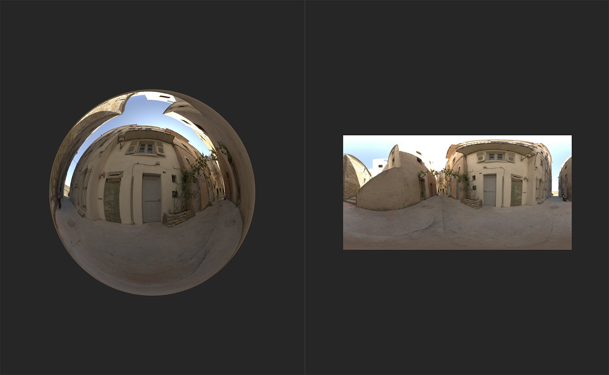
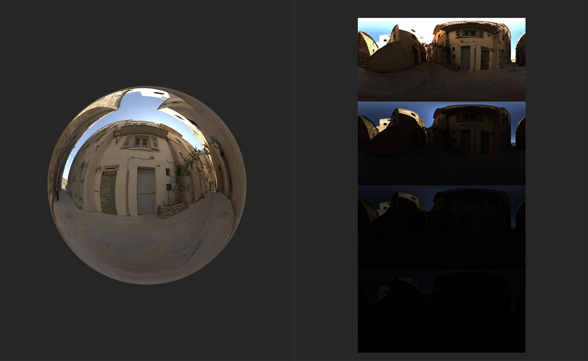

In: HDRI Tools
The Exposure Preview filter lets you preview a spectrum of exposure values quickly.
Below you can see what the Exposure Preview filter does.

In the image above, an environment light has been created and the HDR image data is visible in the 2D view.

With the Exposure Preview filter added to the layer stack, a new channel - Environment Diagnostics - becomes available which shows the the environment light at various exposures.
Basic parameters
The Exposure Preview filter works a little differently to other Sampler filters. It's a tool that's meant to help find the correct exposure for your environment light, but it doesn't actually impact the Environment channel at all - instead, when you add the Exposure Preview filter to the layer stack, an additional channel becomes available to view in the 2D view - the Environment Diagnostic channel.
If you view the Environment Diagnostic channel, you should be able to see a few instances of your 2D environment image at varying exposure values. Adjust the parameters of the Exposure Preview filter to change the range of exposures visible in the Environment Diagnostic channel.